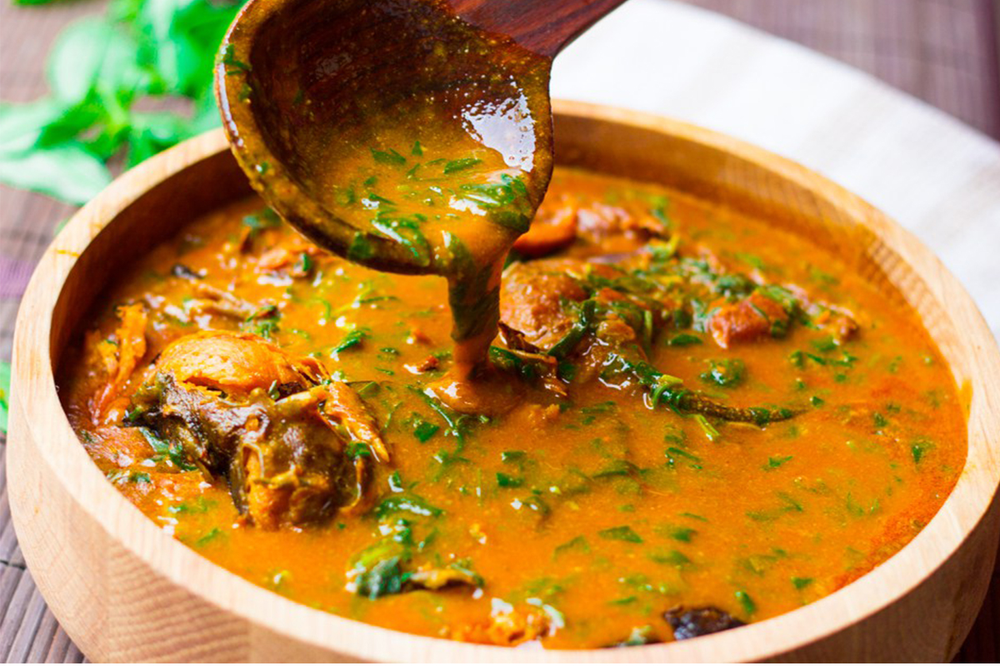

Ogbono Soup

Description
Ogbono soup is native to the western part of Nigeria. It is a soup that has a stretchy consistency with a smooth travel down the throat.
Ingredients
- Ogbono seeds
- Onion
- Chili
- Seasoning and Salt
- Palm Oil
- Protein(Beef, Fish, Stockfish etc)
- Pumpkin leaeves
Steps
- Bring Water(Quantity determined by quantity of Ogbono) to warm temperature.
- Pour in already simmered protein into water and add seasoning, salt and chili and bring to boil.
- Mix ogbono powder with oil till it has a pasty consistency.
- Drop Ogbono paste into Soup consistency and cook till it tastes and smells cooked.
- pour grated leaves into soup and turn for a short while.
- Remove from heat source and serve with Semolina moulds.